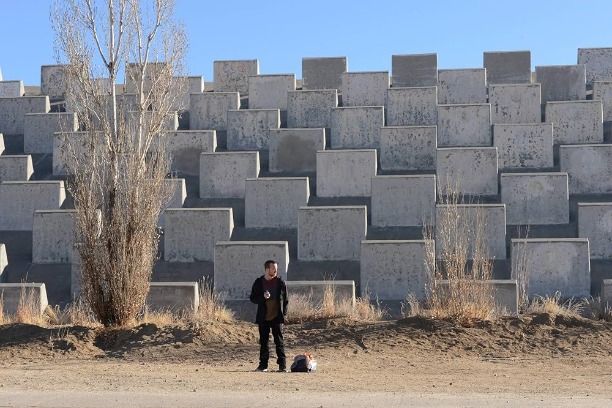

Jesse Pinkman
 Imagem do site: IMDB
Jesse Bruce Pinkman é um personagem fictício na série de televisão americana Breaking Bad. Foi criado por Vince Gilligan e é interpretado por Aaron Paul. Ele é um cozinheiro de metanfetamina de cristal e trabalha com seu ex-professor de química do ensino médio, Walter White (Bryan Cranston) em uma operação de metanfetamina. Jesse é o único personagem além de Walt a aparecer em cada episódio do show.
O personagem recebeu elogios tanto de críticos como de fãs. Paul também recebeu aclamação universal por sua atuação. Para o seu retrato, Paul ganhou o Prêmio Emmy Primetime por ator de apoio excepcional em uma série de dramas em 2010, 2012 e 2014 - o que o torna o único ator a ganhar a categoria três vezes, desde sua separação em drama e comédia. De volta, quando as categorias foram combinadas, Art Carney e Don Knotts ganharam três também, o que liga Paul para a maioria das vitórias na história do prêmio.
Jesse é bem conhecido por seu uso liberal das palavras " yo" e "bitch".
 Imagem do site: IMDB
Imagem do site: IMDB
Biografia
Jesse nasceu em 22 de outubro de 1984 em uma família de classe média alta em Albuquerque, no Novo México. No momento em que a série começa, ele tem sido distanciado de seus pais por causa de seu abuso de drogas e estilo de vida como traficante de drogas. Depois de ter sido forçado a deixar a residência de seus pais, Jesse mudou-se com sua tia Ginny, a quem ele se importou até sua morte por câncer. Posteriormente, ele foi autorizado a ficar em sua casa, cuja propriedade caiu para os pais de Jesse. Jesse era um estudante pobre no ensino médio que preferia sair com seus amigos e fumar maconha do que estudar. Walt, a quem Jesse quase sempre chama "Mr. White", era seu professor de química e falava com Jesse em sua classe. O próprio Walt depois diz que ele nunca pensou que Jesse seria muito, embora a mãe de Jesse lembra que Walt "deve ter visto algum potencial em Jesse, ele realmente tentou motivá-lo. Ele era um dos poucos professores quei se importou.
 Imagem do site: IMDB
Imagem do site: IMDB